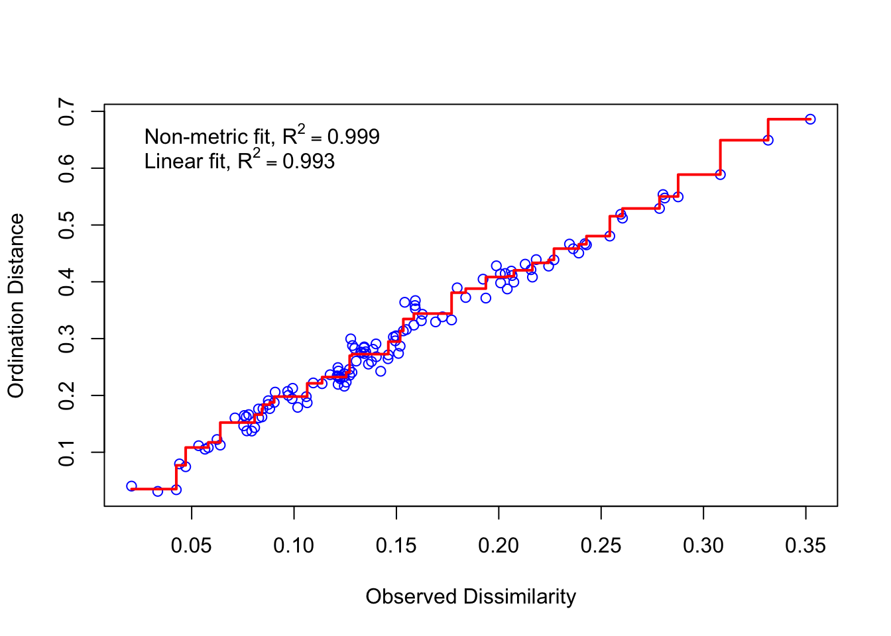
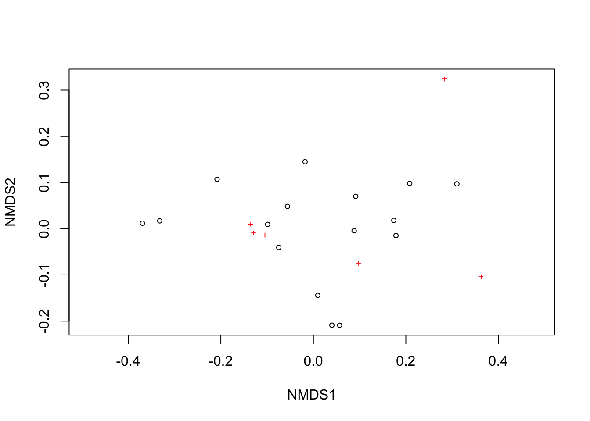

# Load Packages
library(tidyverse)
library(vegan)
library(lubridate)
# Set Working Directory
setwd("/Users/jiashuchen/salmon-research/sp23-salmon-research/analysis")NMDS-May
NMDS Exploratory Analysis For May Habitat Sites
Data Input
Schema
Canopy
Shelter
Vol
Max_temp
Max_DO
Max_vel
Max_RCTdepth
# Load Data Sets
lag21_hab_may_oct <- read_csv("LAG21_Habitat_May_Oct.csv")
lag21_shelter <- read_csv("LAG21_InstreamShelter.csv")
#Filter to retain only May sites
#Clean up data, calculate Vol, max_temp, max_do, max_vel, max_rctdepth
lag21_hab_may_oct[7, 2] = '02/05/21'
#Remove space and parentheses
names(lag21_hab_may_oct)<-str_replace_all(names(lag21_hab_may_oct), c(" " = "", "\\(DD/MM/YY\\)" = ""))
#Remove space and parentheses
names(lag21_shelter)<-str_replace_all(names(lag21_shelter), c(" " = "", "\\(0\\-3\\)" = ""))
#Clean up data and select useful data columns
###Replaced na with 0###
clean_lag21_hab_shelter <- lag21_hab_may_oct %>%
drop_na(Date) %>%
mutate(Date = dmy(Date)) %>%
filter(month(Date) == 5) %>%
rowwise() %>%
mutate(Max_vel = max(c_across(c(Vel0_ms,
Vel1_ms,
Vel2_ms,
Vel3_ms,
Vel4_ms,
Vel5_ms)),
na.rm = T)) %>%
mutate(across(c(Width3_m, Length_m), as.double)) %>%
mutate(Median_width_m = median(c_across(c(Width0_m,
Width1_m,
Width2_m,
Width3_m,
Width4_m,
Width5_m)),
na.rm = T)) %>%
mutate(Median_depth_m = median(c_across(c(Depth0_cm,
Depth1_cm,
Depth2_cm,
Depth3_cm,
Depth4_cm,
Depth5_cm)),
na.rm = T) / 100) %>%
mutate(Vol_m3 = Length_m * Median_depth_m * Median_width_m) %>%
inner_join(lag21_shelter,
by = join_by(SiteName == SiteName),
suffix = c('.hab', '.shelter')) %>%
mutate(canopy_total = Canopy_Head + Canopy_Mid,
DO_Percent = as.double(DO_Percent),
Temperature_C = as.double(Temperature_C)) %>%
select(SiteName, Date, Shelter_Value,
Vol_m3, Temperature_C, DO_Percent,
Max_vel, RCTdepth_cm) %>%
mutate_all(~replace_na(., 0))
view(clean_lag21_hab_shelter)#Random Initial Placement NMDS
#Shuffle rows
clean_lag21_hab_shelter <- clean_lag21_hab_shelter[sample(nrow(clean_lag21_hab_shelter)),]
nmds_lag21 <- clean_lag21_hab_shelter %>%
select(-c(SiteName, Date)) %>%
metaMDS(distance = "bray", k = 3, trymax = 200, plot = F)Square root transformation
Wisconsin double standardization
Run 0 stress 0.03316198
Run 1 stress 0.03610272
Run 2 stress 0.03422311
Run 3 stress 0.03422313
Run 4 stress 0.03422305
Run 5 stress 0.03316204
... Procrustes: rmse 5.951776e-05 max resid 0.0001166054
... Similar to previous best
Run 6 stress 0.03316197
... New best solution
... Procrustes: rmse 9.821776e-05 max resid 0.0002183497
... Similar to previous best
Run 7 stress 0.03316201
... Procrustes: rmse 4.090287e-05 max resid 9.446063e-05
... Similar to previous best
Run 8 stress 0.03316208
... Procrustes: rmse 0.0001929136 max resid 0.0003493579
... Similar to previous best
Run 9 stress 0.03422322
Run 10 stress 0.03316214
... Procrustes: rmse 0.0002362837 max resid 0.0004096373
... Similar to previous best
Run 11 stress 0.03316208
... Procrustes: rmse 0.000207269 max resid 0.0004482986
... Similar to previous best
Run 12 stress 0.03316203
... Procrustes: rmse 9.068439e-05 max resid 0.0001849961
... Similar to previous best
Run 13 stress 0.03316214
... Procrustes: rmse 0.0001742678 max resid 0.0003976377
... Similar to previous best
Run 14 stress 0.03316207
... Procrustes: rmse 0.0001488363 max resid 0.0002643722
... Similar to previous best
Run 15 stress 0.03422324
Run 16 stress 0.03422321
Run 17 stress 0.03610268
Run 18 stress 0.03422312
Run 19 stress 0.03422319
Run 20 stress 0.03422318
*** Best solution repeated 8 timesnmds_lag21
Call:
metaMDS(comm = ., distance = "bray", k = 3, trymax = 200, plot = F)
global Multidimensional Scaling using monoMDS
Data: wisconsin(sqrt(.))
Distance: bray
Dimensions: 3
Stress: 0.03316197
Stress type 1, weak ties
Best solution was repeated 8 times in 20 tries
The best solution was from try 6 (random start)
Scaling: centring, PC rotation, halfchange scaling
Species: expanded scores based on 'wisconsin(sqrt(.))' stressplot(nmds_lag21)
ordiplot(nmds_lag21)